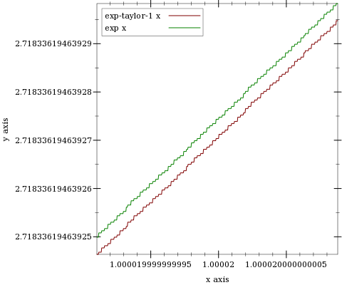
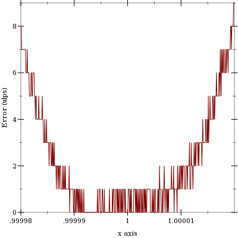

2 Flonums
| (require math/flonum) |
For convenience, math/flonum re-exports racket/flonum as well as providing the functions document below.
2.1 Additional Flonum Functions
> (exact->inexact 0.5f0) 0.5f0
> (flabs (exact->inexact 0.5f0)) flabs: contract violation
expected: flonum?
given: 0.5f0
Examples: | ||||||
|
Examples: | ||||
|
Examples: | ||||||
|
Worst-case time complexity is O(n2), though the pathological inputs needed to observe quadratic time are exponentially improbable and are hard to generate purposely. Expected time complexity is O(n log(n)).
See flvector-sums for a variant that computes all the partial sums in xs.
Example: | |||||||
|

Maximum observed error is 2 ulps, making these functions (currently) much more accurate than their racket/math counterparts. They also return sensible values on the largest possible domain.
These functions are as robust and accurate as their corresponding inverses.
procedure
(flfactorial n) → Flonum
n : Flonum
procedure
(flbinomial n k) → Flonum
n : Flonum k : Flonum
procedure
(flpermutations n k) → Flonum
n : Flonum k : Flonum
procedure
(flmultinomial n ks) → Flonum
n : Flonum ks : (Listof Flonum)
For factorial-like functions that return sensible values for non-integers, see gamma and beta.
procedure
(fllog-factorial n) → Flonum
n : Flonum
procedure
(fllog-binomial n k) → Flonum
n : Flonum k : Flonum
procedure
(fllog-permutations n k) → Flonum
n : Flonum k : Flonum
procedure
(fllog-multinomial n ks) → Flonum
n : Flonum ks : (Listof Flonum)
For log-factorial-like functions that return sensible values for non-integers, see log-gamma and log-beta.
> (fllog (+ 1.0 1e-14)) 9.992007221626358e-15
> (fllog1p 1e-14) 9.99999999999995e-15
> (- (flexp 1e-14) 1.0) 9.992007221626409e-15
> (flexpm1 1e-14) 1.0000000000000049e-14
> (plot (list (function (λ (x) x) #:color 0 #:style 'long-dash) (function (compose fllog1p fl) #:label "fllog1p x") (function (compose flexpm1 fl) #:label "flexpm1 x" #:color 2)) #:x-min -4 #:x-max 4 #:y-min -4 #:y-max 4)

Many flonum functions defined in terms of fllog and flexp become much more accurate when their defining expressions are put in terms of fllog1p and flexpm1. The functions exported by this module and by math/special-functions use them extensively.
> (- 1.0 1e-20) 1.0
procedure
(make-flexpt x) → (Flonum -> Flonum)
x : Real
> (bf-precision 128) > (define y 150.0) > (define pi^y (bigfloat->rational (bfexpt pi.bf (bf y)))) > (flulp-error (flexpt pi y) pi^y) 43.12619934359266
> (define flexppi (make-flexpt (bigfloat->rational pi.bf))) > (flulp-error (flexppi y) pi^y) 0.8738006564073412
procedure
(flsqrt1pm1 x) → Flonum
x : Flonum
2.2 Log-Space Arithmetic
It is often useful, especially when working with probabilities and probability densities, to represent nonnegative numbers in log space, or as the natural logs of their true values. Generally, the reason is that the smallest positive flonum is too large.
> (require math/distributions)
> (pdf (normal-dist) 50.0) 0.0
> (pdf (normal-dist) 50.0 #t) -1250.9189385332047
In log space, exponentiation becomes multiplication, multiplication becomes addition, and addition becomes tricky. See lg+ and lgsum for solutions.
procedure
logx : Flonum logy : Flonum
procedure
logx : Flonum logy : Flonum
procedure
logxs : (Listof Flonum)
When logy > logx, lg- returns +nan.0. Both functions correctly treat -inf.0 as log-space 0.0.
To add more than two log-space numbers with the same guarantees, use lgsum.
Examples: | ||||||||||
|
Though more accurate than a naive implementation, both functions are prone to catastrophic cancellation in regions where they output a value close to 0.0 (or log-space 1.0). While these outputs have high relative error, their absolute error is very low, and when exponentiated, nearly have just rounding error. Further, catastrophic cancellation is unavoidable when logx and logy themselves have error, which is by far the common case.
These are, of course, excuses—
procedure
(flprobability? x [log?]) → Boolean
x : Flonum log? : Any = #f
Examples: | ||||||
|
2.3 Debugging Flonum Functions
The following functions and constants are useful in authoring and debugging flonum functions that must be accurate on the largest possible domain.
> (plot (list (function exp-taylor-1 #:label "exp-taylor-1 x") (function exp #:color 2 #:label "exp x")) #:x-min (flstep 1.00002 -40) #:x-max (flstep 1.00002 40) #:width 480) 
> (plot (function (λ (x) (flulp-error (exp-taylor-1 x) (exp x)))) #:x-min 0.99998 #:x-max 1.00002 #:y-label "Error (ulps)") 
To get a ground-truth function such as exp to test against, compute the outputs as accurately as possible using exact rationals or high-precision bigfloats.
2.3.1 Measuring Floating-Point Error
Examples: | ||||||
|
procedure
(flulp-error x r) → Flonum
x : Flonum r : Real
For non-rational arguments such as +nan.0, flulp-error returns 0.0 if (eqv? x r); otherwise it returns +inf.0.
A flonum function with maximum error 0.5 ulps exhibits only rounding error; it is correct. A flonum function with maximum error no greater than a few ulps is accurate. Most moderately complicated flonum functions, when implemented directly, seem to have over a hundred thousand ulps maximum error.
Examples: | ||||||||||||
|
See relative-error for a similar way to measure approximation error when the approximation is not necessarily represented by a flonum.
2.3.2 Flonum Constants
Example: | ||||||
|
(define (newton-sqrt x) (let loop ([y (* 0.5 x)]) (define dy (/ (- x (sqr y)) (* 2.0 y))) (if ((abs dy) . <= . (abs (* 0.5 epsilon.0 y))) (+ y dy) (loop (+ y dy)))))
Approximation error is often understood in terms of relative error in epsilons. Number of epsilons relative error roughly corresponds with error in ulps, except when the approximation is subnormal.
2.3.3 Low-Level Flonum Operations
procedure
(flonum->bit-field x) → Natural
x : Flonum
Examples: | ||||||||||||||
|
procedure
(bit-field->flonum i) → Flonum
i : Integer
procedure
(flonum->ordinal x) → Integer
x : Flonum
Examples: | ||||||||||||||
|
procedure
(ordinal->flonum i) → Flonum
i : Integer
procedure
(flonums-between x y) → Integer
x : Flonum y : Flonum
Examples: | ||||||||
|
Examples: | ||||||||||||||||
|
procedure
(flsubnormal? x) → Boolean
x : Flonum
Though flonum operations on subnormal numbers are still often implemented by software exception handling, the situation is improving. Robust flonum functions should handle subnormal inputs correctly, and reduce error in outputs as close to zero ulps as possible.
value
value
Example: | ||
|
2.4 Additional Flonum Vector Functions
Example: | ||
|
syntax
(inline-build-flvector n proc)
n : Integer
proc : (Index -> Flonum)
procedure
(flvector-map proc xs xss ...) → FlVector
proc : (Flonum Flonum ... -> Flonum) xs : FlVector xss : FlVector
The proc is meant to accept the same number of arguments as the number of its following flonum vector arguments. However, a current limitation in Typed Racket requires proc to accept any number of arguments. To map a single-arity function such as fl+ over the corresponding number of flonum vectors, for now, use inline-flvector-map.
syntax
(inline-flvector-map proc xs xss ...)
proc : (Flonum Flonum ... -> Flonum)
xs : FlVector
xss : FlVector
procedure
(flvector-copy! dest dest-start src [ src-start src-end]) → Void dest : FlVector dest-start : Integer src : FlVector src-start : Integer = 0 src-end : Integer = (flvector-length src)
procedure
(list->flvector vs) → FlVector
vs : (Listof Real)
procedure
(flvector->list xs) → (Listof Flonum)
xs : FlVector
procedure
(vector->flvector vs) → FlVector
vs : (Vectorof Real)
procedure
(flvector->vector xs) → (Vectorof Flonum)
xs : FlVector
procedure
xs : FlVector ys : FlVector
procedure
xs : FlVector ys : FlVector
procedure
xs : FlVector (flvector- xs ys) → FlVector xs : FlVector ys : FlVector
procedure
xs : FlVector (flvector/ xs ys) → FlVector xs : FlVector ys : FlVector
procedure
(flvector-scale xs y) → FlVector
xs : FlVector y : Flonum
procedure
(flvector-abs xs) → FlVector
xs : FlVector
procedure
(flvector-sqr xs) → FlVector
xs : FlVector
procedure
(flvector-sqrt xs) → FlVector
xs : FlVector
procedure
(flvector-min xs ys) → FlVector
xs : FlVector ys : FlVector
procedure
(flvector-max xs ys) → FlVector
xs : FlVector ys : FlVector
procedure
(flvector-sum xs) → Flonum
xs : FlVector
procedure
(flvector-sums xs) → FlVector
xs : FlVector
Example: | ||||||||||||
|